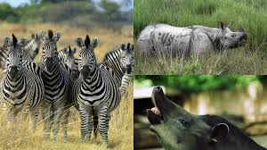

Los perisodáctilos, Perissodactyla o ungulados de dedos impares (del griego antiguo περισσός perissós, "impar"; y δάκτυλος dáktylos, "dedo"), son un orden de mamíferos placentarios. Son mamíferos ungulados que se caracterizan por la posesión de extremidades con un número impar de dedos terminados en pezuñas, y con el dedo central, que sirve de apoyo, más desarrollado que los demás. Son herbívoros. En la actualidad solo incluye a los caballos, asnos, cebras (suborden Hippomorpha), los tapires y los rinocerontes (suborden Ceratomorpha).
Los primeros perisodáctilos eran muy similares a los otros ungulados primitivos. Las patas desarrollan la condición mesaxónica, es decir, el dedo central (tercero) se hace más grande y los demás se reducen, al mismo tiempo que la región inferior de las extremidades se alarga y la superior se acorta, con reducción de la ulna (cúbito) y la fíbula (peroné).
Un rasgo distintivo de los perisodáctilos es la organización del carpo y del tarso. En las patas anteriores (a veces referidas como "manos" en el habla popular), un carpiano distal, el hueso grande, se ensancha y se articula con los carpianos proximales, mientras que en el pie, el ectocuneiforme se transforma en un gran hueso plano que transmite el empuje del astrágalo a través de un navicular aplanado; el astrágalo tiene la superficie inferior aplanada y no a modo de tróclea como en los artiodáctilos.2
El aparato digestivo está menos especializado que en los artiodáctilos. Los incisivos se conservan y se usan para segar la hierba, los caninos están reducidos o ausentes y, a menudo, hay un diastema. Los molares de las formas primitivas permanecieron bunodontos y de corona baja, pero en los rinocerontes y caballos modernos tienen una elaborada superficie trituradora; los premolares se molarizan, con lo que se consigue un gran superficie trituradora.
El tubo digestivo es más simple que el de los artiodáctilos. El estómago no presenta cámaras. La digestión de la celulosa se realiza en el ciego y el intestino grueso, que puede estar muy desarrollado.
Los perisodáctilos son macrosmáticos, es decir, predomina el sentido del olfato, con la porción sensorial de la nariz muy desarrollada.